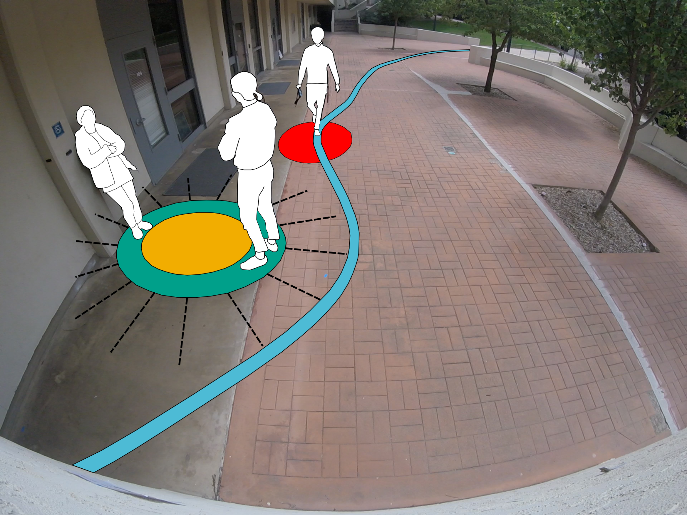
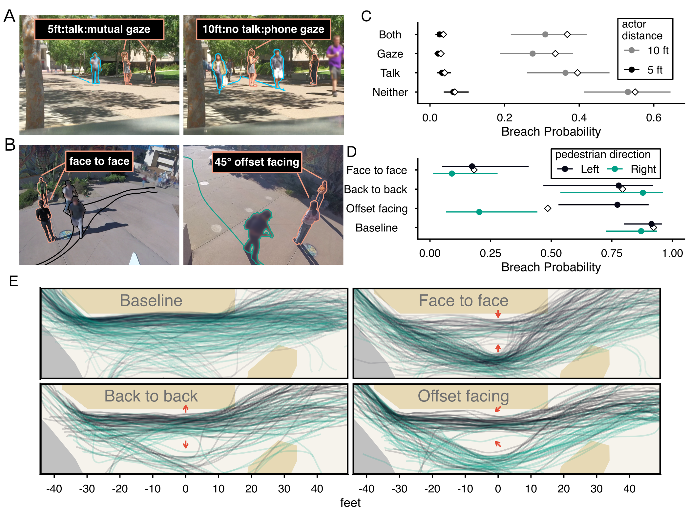
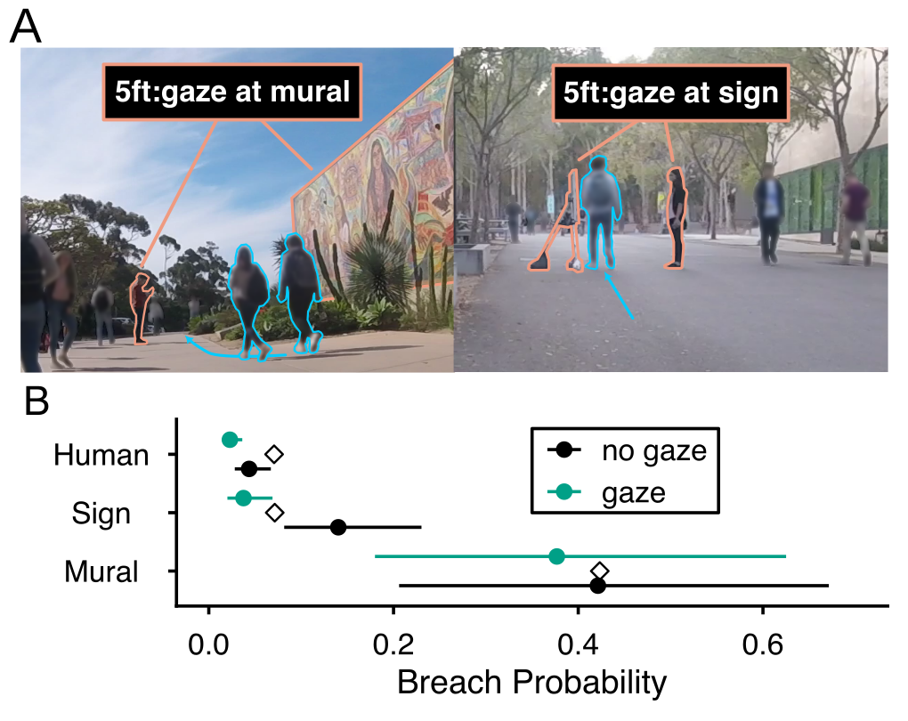
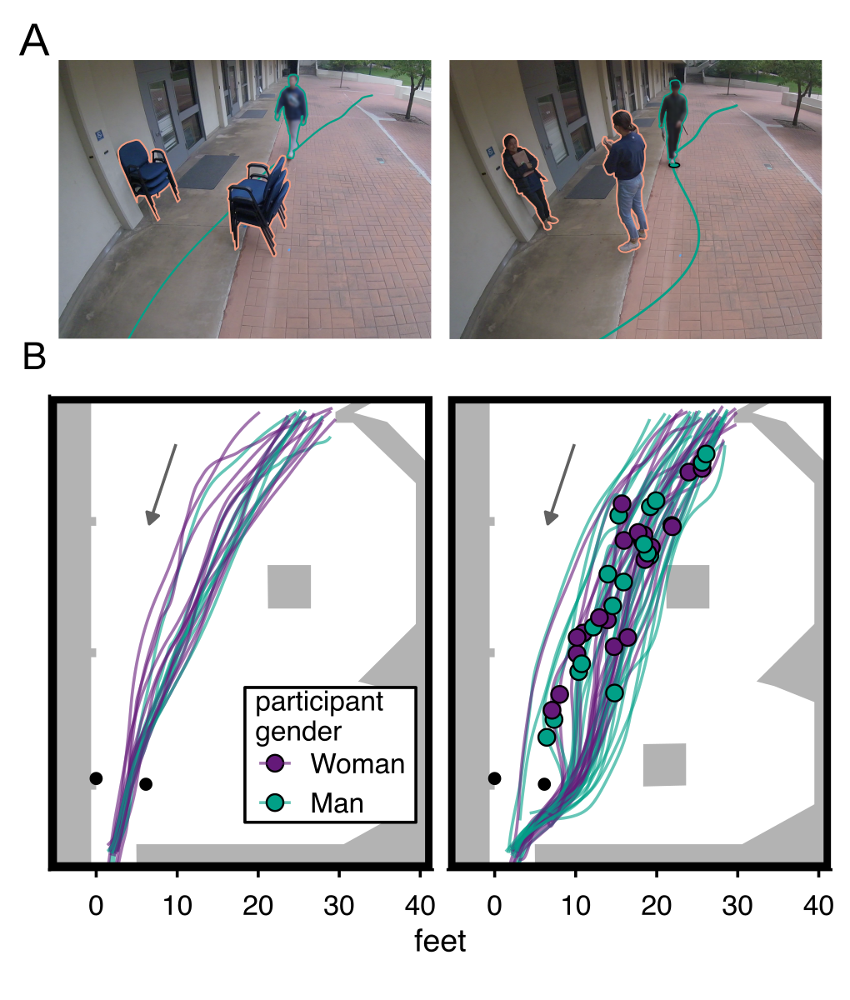
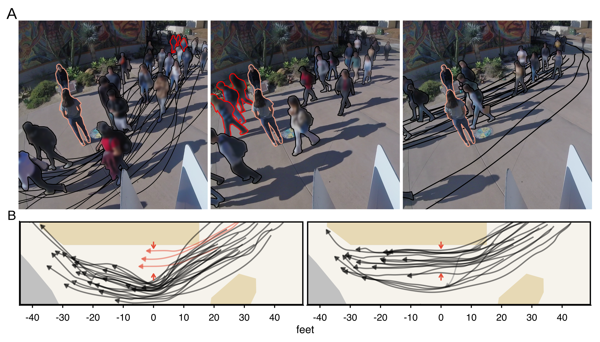

1Dept. of Cognitive Science, UC San Diego 2Dept. of Biology, UC San Diego 3Herbert Wertheim School of Public Health & Human Longevity Science, UC San Diego
Fig. 1 | A diagram of our field experiments. Actors (shown in orange) stood in busy pathways while displaying 5 distinct signs of interactional involvement (see depictions of Variables 1–5). Over various conditions, we observed whether pedestrians (shown in blue) walked between or around our actors and we measured pedestrians' walking trajectories.
Abstract
Pedestrian dynamics are characterized as complex physical systems constrained by social norms, like personal space. Yet, prior research has ignored the spatial norms imposed by others' social interactions, such as conversations. Unlike physical obstacles, the boundaries of social interactions are latent — even more so than those of personal space — as if they are invisible walls, and must be inferred from signs of interactional involvement. In four field experiments with 4,911 participants, we show that pedestrians integrate others' gaze, proximity, body orientation, and talk to avoid interrupting possible interactions. However, pedestrians also collectively violate these spatial norms by walking through an interaction if other pedestrians had already done so. These results demonstrate how physical mobility depends on pedestrians' social computations.
Short Introduction
One of the key demands of spatial navigation is the frequent need to traverse public places, and, therefore, pedestrians must regularly deal with coming into contact with other humans. As such, an understanding of pedestrian behavior needs to take into account a broad range of human social dynamics if we are to understand pedestrian physical dynamics.
Vid. 1 | A demonstration of proxemic norms and their effects on pedestrian traffic flow.
One way people informally coordinate the use of space for transit and social interaction is through proxemic norms (Hall, 1966) — tacit rules that regulate the social use of space. Much research has focused on how pedestrians avoid intruding into each other's personal space (Sommer, 1959), defined as “an area with invisible boundaries surrounding a person's body into which intruders may not come” (Sommer, 1969).
However, research has largely neglected the activities those individuals are engaged in, especially their social interactions, such as conversation. Consider, for example, two individuals chatting in front of a busy library entrance; even if the space between them is physically unoccupied or claimed by personal space, pedestrians will tend to walk around the interactants rather than between them (Fig. 1, Vid. 1). Such activities impose an interactional territory (Lyman & Scott, 1967): an invisible boundary around an interaction into which non-participants may not come. While prior work has characterized the spatial arrangements interactants adopt during face-to-face encounters, such as F-formations (Kendon, 1990), it has not investigated how pedestrians navigate around social interactions in naturalistic settings.

Fig. 2 | Proxemic boundaries superimposed on a physical scene. The pedestrian's personal space is represented in red. The interactants' interactional territory is depicted as an area surrounding their interaction.
We propose that in order for pedestrians to navigate around social interactions, they must recognize the presence, extent, and claims of interactional territory. However, unlike physical obstacles and to a greater degree than personal space, interactional territories are not directly observable. We propose that pedestrians infer the presence and extent of interactional territory by reading others' involvement signs (Goffman, 1963). These include where others are looking, whether they are talking, how their bodies are oriented, how far apart they are standing, where they are standing, and so on.
We also propose that once pedestrians detect interactional territory, they must then reason about the social and energetic costs of possible walking trajectories. On one hand, politeness motivates pedestrians to avoid breaching others’ interactional territory, since they would impede and interrupt those people. Therefore, doing so constitutes a negative face-threatening act (Brown & Levinson, 1987; Goffman, 1955). On the other hand, the least socially costly trajectory may not be the least energetically costly trajectory, and so pedestrians are motivated to breach interactional territory. The collective behavior of pedestrians may facilitate the breaching of interactional territory (see Vid. 6). Decisions to breach social norms are the product of both individual and collective decision-making (Krause et al., 2021). Pedestrians’ violations of explicit laws such as jaywalking (Faria et al., 2010) and trespassing (Keizer et al., 2008) are shaped by the behavior of other pedestrians.
Here, we investigate how pedestrians navigate around others’ social interactions using 4 breaching experiments (Garfindel, 1967). We show that pedestrians are acutely aware of others’ social interactions and the proxemic norms they impose. The probability pedestrians breach these norms depends on how others display their involvement in social interaction, specifically, their body orientation, interpersonal distance (5ft vs. 10ft), whether they shared mutual gaze, and whether they were speaking. These effects cannot be explained by gaze aversion or physical occupancy. Finally, we show that pedestrians engage in collective rule-breaking, where pedestrians are more likely to breach a proxemic norm when a preceding pedestrian has done so.
Methods
We positioned actors on heavily trafficked pedestrian pathways and observed how many pedestrians passed between (breached) versus around them. In experiment 1, two actors stood 5 or 10 feet apart in a 2×2×2 design manipulating mutual gaze (vs. looking at a phone), talk (vs. silence), and interpersonal distance, while also varying actor gender; we filmed 2,319 pedestrians (2017–2019) (see Vid. 2). In experiment 2, two actors stood 10 feet apart on a busy pathway while we manipulated their mutual body orientation (face to face, back to back, 45° offset, or a no-actor baseline); we filmed 978 pedestrians (2023) (see Vid. 3). In experiment 3, one actor stood in front of an informational sign or an art mural and either gazed at it or down at a phone; we observed 1,515 pedestrians (2018–2019) (see Vid. 4). In experiment 4, we recruited 99 undergraduates under the cover story of a visual-spatial memory task. On their return through an outdoor hallway, we placed either two women actors, two chairs, or nothing (baseline) across the entrance and recorded whether participants passed between or around them (see Vid. 5). In experiments 2 & 4, we also tracked pedestrian trajectories through the space using computer vision and calibrated monocular cameras (see Trajectory Explorable).
Vid. 5 | Experiment 4 conditions and qualitative tracking results.
Short Results
Across experiments 1 and 2, pedestrians were systematically less likely to walk between actors based on the involvement signs the actors displayed (see Fig. 2). In experiment 1, pedestrians were 3× less likely to breach when actors shared mutual gaze than when they looked at their phones, 2× less likely when actors were talking than silent, and 17× less likely when actors stood 5 feet apart than 10 feet apart. Notably, gaze and talk did not combine additively: pedestrians were no less likely to breach when actors shared mutual gaze and talked than when they shared mutual gaze in silence, suggesting that mutual gaze alone saturated pedestrians' inference of social involvement. Experiment 2 revealed strong effects of body orientation — a key resource in how people conduct social interactions (Hall, 1966; Rossano, 2012; Schegloff, 1998). Face-to-face actors were breached 6× less than actors offset 45°, and 62× less than the no-actor baseline. Pedestrians appeared to reason about the actors' body orientation relative to their own: when actors stood 45° offset, pedestrians approaching head-on were 13× less likely to breach than those approaching from behind.

Fig. 2 | (A) Video frames from experiment 1. (B) Video frames from experiment 2. (C) Breaching probabilities from experiment 1. Dots represent the estimated marginal mean and lines represent 95% confidence intervals. Empirical breaching rates are represented with white diamonds. (D) Breaching rates from experiment 2 plotted by condition and pedestrian walking direction. Conditions are depicted on the right side of the plot. (E) Pedestrian trajectories from experiment 2 are plotted and colored by direction. Green is rightward. Black is leftward. Actor body orientation is depicted by red arrows. Types of terrain are represented by the colored background. Off-white depicts a pedestrian pathway, yellow depicts patches of dirt and vegetation, and grey depicts an asphalt roadway.
Experiment 3 showed that pedestrians reason about the type of interaction our actors were involved in (see Fig. 3). Pedestrians were over 3× more likely to walk between a sign and an actor than between two actors — but only when the actor looked at their phone. When the actor gazed at the sign, pedestrians were no more likely to breach than in the two-actor condition. Additionally, pedestrians were significantly more likely to walk between an actor and a mural no matter whether they were looking at their phone or the mural. These results suggest pedestrians reason about what kinds of activities others' are engaged in and not merely avoiding gaze.

Fig. 3 | (A) Video frames from experiment 3 of the 5 ft + mutual gaze + sign (left) and the 5 ft + no gaze + sign condition (right). (B) Breaching probabilities pooled from experiment 1 & 3 at 5 feet. Dots represent the estimated marginal mean and lines represent 95% confidence intervals. Empirical breaching rates are represented with white diamonds.
Experiment 4 confirmed this with a controlled design (see Fig. 4): 100% of participants walked between two chairs or through the empty baseline, but only 12% walked between two actors standing in the same position.

Fig. 4 | (A) Video frames from experiment 4. (B) Pedestrian trajectories from experiment 4 colored by pedestrian gender (green for man, purple for woman). Colored circles mark where each participant changed course around the actors.
We observed equivocal effects of actor gender. In experiment 1, pedestrians were twice as likely to breach the interactional territory of two women actors than two men actors. This effect did not replicate in experiment 3 alone, but was significant when pooling experiments 1 and 3. Pedestrian gender, however, had no effect on breaching in any experiment, nor did we find any interaction between pedestrian and actor gender. In experiment 4, we tested whether men pedestrians approached actors closer before altering course — which would suggest an expectation that others would yield — but found no evidence of this (see Fig. 4). For a fuller discussion of these equivocal gender effects and their relationship to prior work, see the full paper.
Finally, pedestrians were over twice as likely to breach if another pedestrian had done so in the preceding 5 seconds, controlling for crowding — evidence of collective social contagion in proxemic norm-breaking (see Fig. 5, Vid. 6).

Fig. 5 | On December 7th, 2023 at 12:31:35, over the span of 35.5 seconds, a crowd of 46 pedestrians walked past an art mural while two actors silently stood 10 feet apart while facing and staring at each other. The first 22 pedestrians walk around the actors. 13.6 seconds after the arrival of the first pedestrian, a group of 3 pedestrians (in red) walk between the actors within 0.1 seconds of each other. Just 2.1 seconds later, the first of 12 of the 19 remaining pedestrians also walk between them. (A) Video frames before, during, and after the group of 3 pedestrians breaches. (B) Pedestrian trajectories before and after the group of 3 pedestrians breaches.
We showed that pedestrians make fine-grained inferences about others' social interactions. The probability that pedestrians breach an interactional territory depends systematically on both how others display their involvement in these activities and whether other pedestrians have already breached these territories. Unlike physical collisions, breaching proxemic norms does not just perturb the order of traffic — it also perturbs the social order.
This is reminiscent of Herbert Simon's parable of the ant:
“Viewed as a geometric figure, the ant's path is irregular, complex, hard to describe. But its complexity is really a complexity in the surface of the beach, not a complexity in the ant.” — Simon (1969, p. 64)
We argue that, similarly, pedestrians' paths are also complex and that this complexity is also a product of interaction with their environment. But, unlike Simon's parable, the trajectories we observed in humans are the result of a socially constructed reality. Pedestrian traffic reflects the rich human social umwelt (Uexküll, 1934)1 as much as it reflects the dynamics of physical systems composed of people. In other words, pedestrians trace the contours of human sociality.
Furthermore, these results should remind us of the central role of conversational interaction in organizing human life. While some estimates show that humans spend 30% of their time involved in conversation (Levinson, 2025), our results show that, even when we ourselves are not involved in conversation, our minds are preoccupied and oriented toward others' conversations.
In general, the behavior of animals depends on their socioecology. This gives rise to a kind of socially situated navigation whereby hidden social structures govern the movement of animals — whether it be the presence of conversations and the proxemic norms they impose, or the social structure of rank among a group of macaque monkeys (Kaufhold, Terwilliger & Rossano, 2025).
This has consequences for human-centered design. Autonomous robots are increasingly designed to share pedestrian environments, and therefore they must be able to model the human social umwelt if they are to navigate safely and appropriately in it.
1 To avoid misrepresenting the rich sociality of real-world ants, they also actively participate in the social construction of their physical environment. The architecture of an ant colony consists of a complex geometric structure on which collectively constructed 'invisible' boundaries can be superimposed. The difference is that they mark these boundaries with chemical signs (Heyman et al., 2017).
Trajectory Explorable
Explorable 1 | Interactive exploration of experiment 2 trajectory data from 2023-12-07.
@article{terwilliger2026invisible,
title={Invisible walls: how pedestrians navigate around social interactions},
author={Terwilliger, Jack and Di Silvestri, Julia and Murase, Seika and White, Anne Elizabeth Clark and Rossano, Federico},
journal={arXiv preprint arXiv:2607.20876},
year={2026}
}
References
P. Brown, S. C. Levinson, Politeness: Some Universals in Language Usage (Cambridge University Press, 1987).
J. J. Faria, S. Krause, J. Krause, Collective behavior in road crossing pedestrians: The role of social information. Behavioral Ecology21, 1236–1242 (2010).
H. Garfinkel, Studies in Ethnomethodology (Prentice-Hall, 1967).
E. Goffman, On face-work: An analysis of ritual elements in social interaction. Psychiatry18, 213–231 (1955).
E. Goffman, Behavior in Public Places (The Free Press, 1963).
E. T. Hall, The Hidden Dimension (Doubleday & Co, 1966).
G. M. Heyman, D. Luo, C. Villanueva, The role of pheromones in the construction and maintenance of ant colony architecture. Behavioral Ecology and Sociobiology (2017).
K. Keizer, S. Lindenberg, L. Steg, The spreading of disorder. Science322, 1681–1685 (2008).
A. Kendon, Conducting Interaction: Patterns of Behavior in Focused Encounters (Cambridge University Press, 1990).
J. Krause, P. Romanczuk, E. Cracco, W. Arlidge, A. Nassauer, M. Brass, Collective rule-breaking. Trends in Cognitive Sciences25, 1082–1095 (2021).
S. C. Levinson, "The Interaction Engine and Social Life" in The Interaction Engine: Language in Social Life and Human Evolution (Cambridge University Press, 2025), pp. 107–148.
S. M. Lyman, M. B. Scott, Territoriality: A neglected sociological dimension. Social Problems15, 236–249 (1967).
F. Rossano, "Gaze in Conversation" in The Handbook of Conversation Analysis, J. Sidnell, T. Stivers, Eds. (Wiley, 2012), pp. 308–329.
E. A. Schegloff, Body torque. Social Research65(3), 535–596 (1998).
H. A. Simon, The Sciences of the Artificial (MIT Press, 1969).
R. Sommer, Studies in personal space. Sociometry22, 247–260 (1959).
R. Sommer, Personal Space: The Behavioral Basis of Design (Prentice-Hall, 1969).
J. von Uexküll, "A stroll through the worlds of animals and men" in Instinctive Behavior: The Development of a Modern Concept, C. H. Schiller, Ed. (International Universities Press, 1957), pp. 5–80.